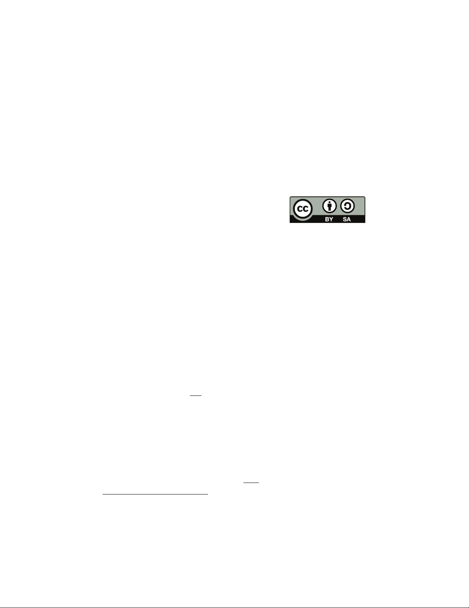
Solutions for Trigonometry by Gelfand & Saul
Git commit 2685d47. Published November 16, 2022.
This work is licensed under a Creative Commons
“Attribution-ShareAlike 4.0 International” license.
Introduction
Trigonometry by Gelfand and Saul is often recommended as a precalculus text
for self-study. However, those who are learning without the help of a teacher
can struggle with the lack of solutions to exercises in the text. A partial set of
solutions for Trigonometry (odd numbered exercises only) has been published by
John Beach1. It is hoped that this document will eventually contain a complete
set of solutions. Contributions are welcome. These can take the form of pull
requests or issues submitted to the project’s GitHub repository2.
Chapter 0: Trigonometry
Page 8
1. Statement I applies:
c2=a2+b2= 102+ 242= 100 + 576 = 676
c=√676 = 26
2. Statement I applies:
a2+b2=c2
a2+ 92= 412
a2+ 81 = 1681
a2= 1600
a=√1600 = 40
1https://jbeach50.weebly.com/gelfand–saul-trig-solutions.html
2https://github.com/philip-healy/gelfand-trigonometry-solutions
1
3. 52+ 122= 25 + 144 = 169 = 132. By Statement II, a right triangle exists
with legs of length 5 and 12, and hypotenuse of length 13.
4. Statement I applies:
a2+b2=c2
a2+ 12= 32
a2+ 1 = 9
a2= 8
a=√8 = √4√2=2√2
5. Statement I applies, where a=b:
a2+a2=c2
a2+a2= 12
2a2= 1
a2=1
2
a=r1
2=√1
√2=1
√2
6. From the diagram at the bottom of Page 11, we can see the shorter leg is
half the length of the hypotenuse. So in this instance the shorter leg has
length 1/2. We can use Statement 1 to find the length of the longer leg:
a2+b2=c2
a2+1
22
= 12
a2+1
4= 1
a2=3
4
a=r3
4=√3
√4=√3
2
7. For any point Y, we can draw a triangle with sides AY ,BY and AB. Let
abe the length of side AY ,bbe the length of side BY and cbe the length
of side AB. According to Statement II, the subset of these triangles where
a2+b2=c2are right triangles with legs of length aand band hypotenuse
c. Let Xbe the subset of Ythat are vertices of these right triangles. This
set of points describes a circle with its centre at the midpoint of AB, and
radius AB/2.
8.
2
Page 9
1. 62+ 82= 36 + 64 = 100 = 102. By Statement II on Page 7 (converse of the
Pythagorean Theorem), this is a right triangle.
2. 10-24-26 (Exercise 1), 9-40-41 (Exercise 2), 5-12-13 (Exercise 3)
3. Using the Pythagorean Theorem:
c2=a2+b2= 82+ 152= 64 + 225 = 289
c=√289 = 17
4. The first column in the table increases by 3, the second increases by 4 and
the third increases by 5. Continuing to add rows yields triangles 12-16-20,
15-20-25 and 18-24-30.
5. Shortest side with length 10: 10-24-26. Shortest side with length 15: 15-36-
39.
6. Multiplying all sides by the common denominator (5), we get a similar tri-
angle with sides 15/5 = 3, 20/5 = 4 and 5. We know that this is a right
triangle from the table in Question 4.
7. To find a similar triangle with shorter leg 1, divide all sides by 3, resulting in
sides 1-4/3-5/3. To find a similar triangle with longer leg 1, divide all sides
by 4, resulting in sides 3/4-1-5/4.
8. To find a similar triangle with hypotenuse 1, divide all sides by 13, resulting
in sides 5/13-12/13-1. To find a similar triangle with shorter leg 1, divide
all sides by 5, resulting in sides 1-12/5-13/5. To find a similar triangle with
longer leg 1, divide all sides by 12, resulting in sides 5/12-1-13/12.
9. To formula for the area of a triangle is 1
2bh where bis the length of the base
and his the height. For right triangles, finding the area is easy: one leg is the
base and the other leg is the height. For other triangles, finding the height
is more difficult: we need to find the length of the altitude drawn from the
base. The triangles with sides 5-12-13 and 9-12-15 are both right triangles:
see Exercise 3 on Page 8 and Exercise 4 on Page 9. The triangle with sides
13-14-15 is not a right triangle. We can confirm this using Statement I:
a2+b2= 132+ 142= 365, c2= 152= 225, a2+b2=c2. However, if we join
the 5-12-13 and 9-12-15 triangles using their equal legs, the resulting triangle
has the dimensions we are looking for: 13-14-15. The base of this combined
triangle has length 5 + 9 = 14. We also know the length of the altitude from
the base of the combined triangle: 12. So, the area of the 13-14-15 triangle
is 1
2·14 ·12 = 84 units squared.
10. (a)
(b)
3
Page 11
1. 1
√2(see the solution for Question 5 on page 8).
Challenge: 1
√2=√2
2(multiplying above and below by √2). √2 is given to
9 decimal places in the diagram on the top of page 11: 1.4141213562373.
Dividing this decimal representation by 2 (using long division if necessary)
yields a figure of 0.707060678.
2. c2=a2+b2= 32+ 32= 9 + 9 = 18. c=√18 = √9√2 = 3√2.
3. The hypotenuse of a 30◦right triangle is double the length of the shorter leg.
In this instance the hypotenuse is 10 units long. We can use the Pythagorean
Theorem to find the length of the longer leg:
a2+b2=c2
a2+ 52= 102
a2+ 25 = 100
a2= 75
a=√75 = √25√3=5√3
4. We can solve these by finding similar triangles to the 30◦right triangle with
sides 1-√3-2, or the 45◦right triangle with sides 1-1-√2.
(a) x=√3, y= 2
(b) x=1
√3,y=2
√3
(c) x= 1/2, y=√3/2
(d) x= 4√3, y= 8
(e) x=y= 2√2
(f) x= 5, y= 5√2
Page 14 (Examples)
1. Why didn’t we need to compare 32with 22+ 42, or 22with 32+ 42?
The obtuse angle will always be opposite the longest side.
2. This conclusion is incorrect. Why?
From the footnote at the beginning of Chapter 0: “Given three arbitrary
lengths. . . they form a triangle if and only if the sum of any two of them is
greater than the third.” In this case 1 + 2 = 3 which is equal to (not greater
than) the third side.
4
Page 14 (Exercise)
1. (a) c2= 82= 64. a2+b2= 62+ 72= 36 + 49 = 85. c2< a2+b2, so the
triangle is acute.
(b) c2= 102= 100. a2+b2= 62+ 82= 36 + 64 = 100. c2=a2+b2, so
the triangle is a right triangle.
(c) aand bare the same as in question b), but cis smaller, so the triangle
is acute.
(d) aand bare the same as in question b), but cis larger, so the triangle
is obtuse.
(e) c2= 122= 144. a2+b2= 52+ 122= 25 + 144 = 169. c2< a2+b2, so
the triangle is acute.
(f) c2= 142= 196. a2+b2= 169, as above. c2> a2+b2, so the triangle
is obtuse.
(g) The sum of two sides must be larger than the third, but 12 + 5 = 17
in this case.
Chapter 1: Trigonometric Ratios in a Triangle
Page 23
1. (a) sin α= 5/13
(b) sin α= 4/5
(c) sin α= 5/13
(d) c=√62+ 82=√100 = 10. sin α= 8/10.
(e) sin α= 3/5
(f) sin α= 12/13
(g) sin α= 3/5
(h) c=√72+ 32=√58. sin α= 7/√58.
2. (a) sin β= 12/13
(b) sin β= 3/5
(c) sin β= 12/13
(d) sin β= 6/10
(e) sin β= 4/5
(f) sin β= 5/13
(g) sin β= 4/5
(h) sin β= 3/√58
5
3. The example 30-60-90 triangle given on page 11 has sides 1, √3, 2. Let β
represent the 60◦angle. The opposite leg bhas length √3. The hypotenuse
chas length 2. So, sin β=b/c =√3/2≈1.732/2=0.866.
Crossing off the numbers listed:
0.1
0.2
0.3
0.4
0.5
0.6
0.7
0.8 0.9
Page 25
1. The Altitude-on-Hypotenuse Theorem tells us that when an altitude is drawn
to the hypotenuse of a right triangle, the two triangles formed are similar
to the given triangle and to each other. Therefore, the triangles with sides
a-b-c,a-p-dand d-b-qare similar, and the ratio for sin αappears in all of
them:
(a) b/c
(b) d/a
(c) q/b
2. (a) sin α=h/b
(b) Multiplying both sides of formula above by b:h=bsin α
(c) Substituting bsin αfor h, the formula for the area of ABC can be
rewritten as: bc sin α/2.
(d) sin β=h/a. Rewriting this in terms of h:h=asin β. Substituting
this for hin the area formula: ac sin β/2.
(e) Let h2represent the altitude from Ato BC.sinβ =h2/c. Rewriting
in terms of h2, we get h2=csin β.
3. (a) Expressing hin terms of sin αand b:
sin α=h
b
h=bsin α
Expressing hin terms of sin βand a:
sin β=h
a
h=asin β
(b) Both expresssions are equal to h:
asin β=h=bsin α
(c) Expressing h2in terms of sin βand c:
sin β=h2
c
h2=csin β
6
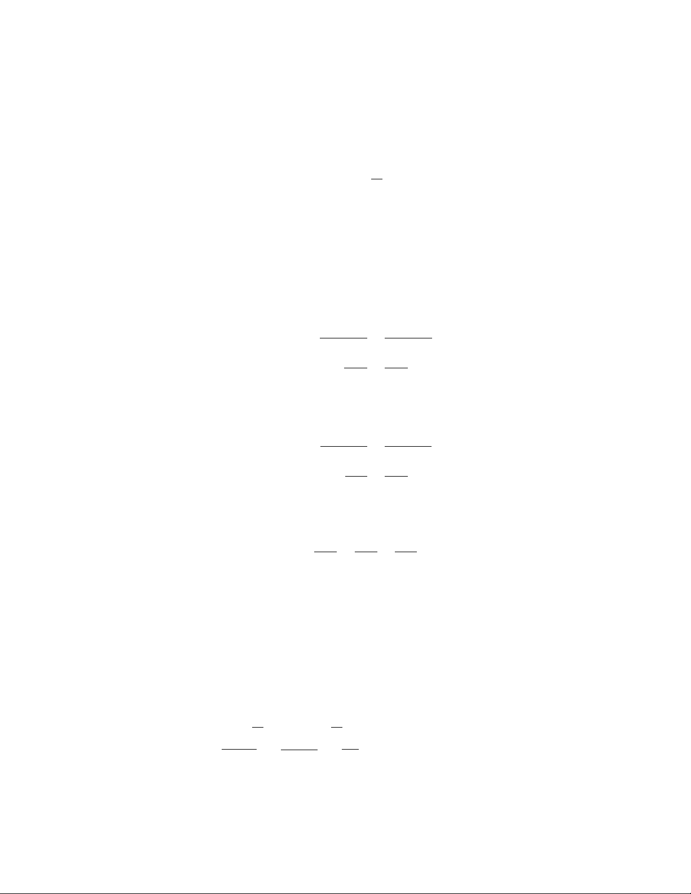
Expressing h2in terms of sin γand b:
sin γ=h2
b
h2=bsin γ
Both expressions are equal to h2:
bsin α=h2=csin γ
(d) i. We can rewrite the result from part (b) so that the expressions on
each side are fractions with sine denominators:
asin β=bsin α
asin β
sin αsin β=bsin α
sin αsin β
a
sin α=b
sin β
ii. We can rewrite the result from part (c) similarly:
csin β=bsin γ
csin β
sin βsin γ=bsin γ
sin βsin γ
c
sin γ=b
sin β
We can derive the Law of Sines by combining results i. and ii. using the
common expression b/ sin β:
a
sin α=b
sin β=c
sin γ
Page 26
1. (a) cos α= 12/13. cos β= 5/13.
(b) cos α= 3/5. cos β= 4/5.
(c) cos α= 12/13. cos β= 5/13.
(d) cos α= 6/10. cos β= 8/10.
(e) cos α= 4/5. cos β= 3/5.
(f) cos α= 5/13. cos β= 12/13.
(g) cos α= 4/5. cos β= 3/5.
(h) cos α= 3/√58. cos β= 7/√58.
2. (a) c=√82+ 62=√64 + 36 = √100 = 10. cos α= 8/10. cos β= 6/10.
7

(b) c=√52+ 122=√25 + 155 = √169 = 13. cos α= 12/13. cos β=
5/13.
(c) Scaling up the 1-√3-2 30◦triangle gives us a value of 20 units for the
length of c. Next, we will use the Pythagorean Theorem to find the
length of the longer leg:
a2+b2=c2
102+b2= 202
b2= 400 −100 = 300
b=√300 = √100√3 = 10√3
We can now find cos αand cos β:
cos α=10√3
20 =√3
2
cos β=10
20 =1
2
(d) The triangle is congruent to the one above, so the solution is the same.
(e) Consider the 45◦right triangle with legs of length 1 and hypotenuse
√2. cos α= cos β= 1/√2.
(f) c=√32+ 42=√9 + 16 = √25 = 5. cos α= 3/5. cos β= 4/5.
(g) b=x√3. cos α=x√3/2x=√3/2. cos β=x/2x= 1/2.
3. The Altitude-on-Hypotenuse Theorem tells us that when an altitude is drawn
to the hypotenuse of a right triangle, the two triangles formed are similar
to the given triangle and to each other. Therefore, the triangles with sides
a-b-c,a-p-dand d-b-qare similar, and the ratio for cos αappears in all of
them:
(a) a/c
(b) p/a
(c) d/b
Page 28
1. In this instance, α= 29◦,β= 61◦, and α+β= 90◦. According to the
theorem above, if α+β= 90◦, then sin α= cos β.
2. x= 90 −35 = 55◦
3. If α+β= 90◦, then β= 90◦−α. According to the theorem above, sin α=
cos β. Substituting (90 −α) for β: sin α= cos (90 −α).
8
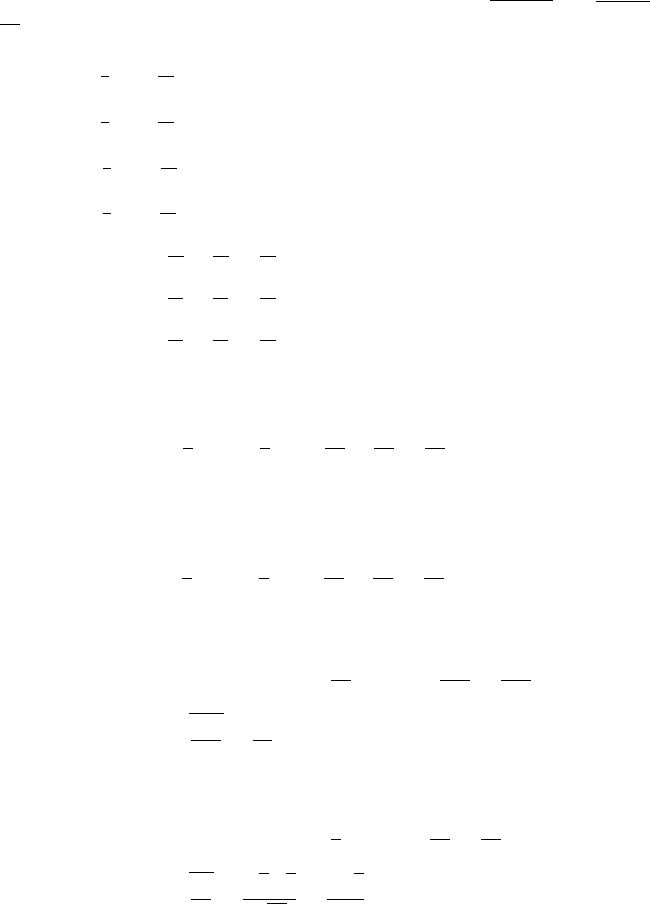
Page 29
First, we need to find the length of the hypotenuse: c=√32+ 42=√9 + 16 =
√25 = 5.
1. sin2α=4
52=16
25
2. sin2β=3
52=9
25
3. cos2α=3
52=9
25 (same as sin2β)
4. cos2β=4
52=16
25 (same as sin2α)
5. sin2α+ cos2α=16
25 +9
25 =25
25 = 1
6. sin2α+ cos2β=16
25 +16
25 =32
25
7. cos2α+ sin2β=9
25 +9
25 =18
25
Page 30
1. sin2α+ cos2α=4
52
+3
52
=16
25 +9
25 =25
25 = 1
2. It’s not an error. According to the corollary of the Pythagoream Theorem,
this a right triangle: a2+b2= 32+ 42= 9 + 16 = 25 = c2.
3. sin2β+ cos2β=3
52
+4
52
=9
25 +16
25 =25
25 = 1
4. cos2α+ sin2α= 1
cos2α= 1 −sin2α= 1 −5
132
= 1 −25
169 =144
169
cos α=r144
169 =12
13
5. cos2α+ sin2α= 1
cos2α= 1 −sin2α= 1 −5
72
= 1 −25
49 =24
49
cos α=r24
49 =√4√6
√49 =2√6
7
9
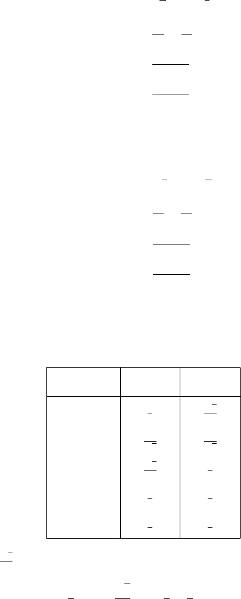
6. We will follow the proof at the bottom of Page 29:
sin2α+ sin2β=a
c2
+b
c2
=a2
c2+b2
c2
=a2+b2
c2
=a2+b2
a2+b2
= 1
7. Again, we will follow the proof at the bottom of Page 29:
cos2α+ cos2β=b
c2
+a
c2
=b2
c2+a2
c2
=a2+b2
c2
=a2+b2
a2+b2
= 1
Page 31
1.
angle xsin xcos x
30◦1
2
√3
2
45◦1
√2
1
√2
60◦√3
2
1
2
α4
5
3
5
β3
5
4
5
2. cos 30◦=√3
2= sin 60◦
3. sin230◦+ cos230◦=1
22
+ √3
2!2
=1
4+3
4= 1
10
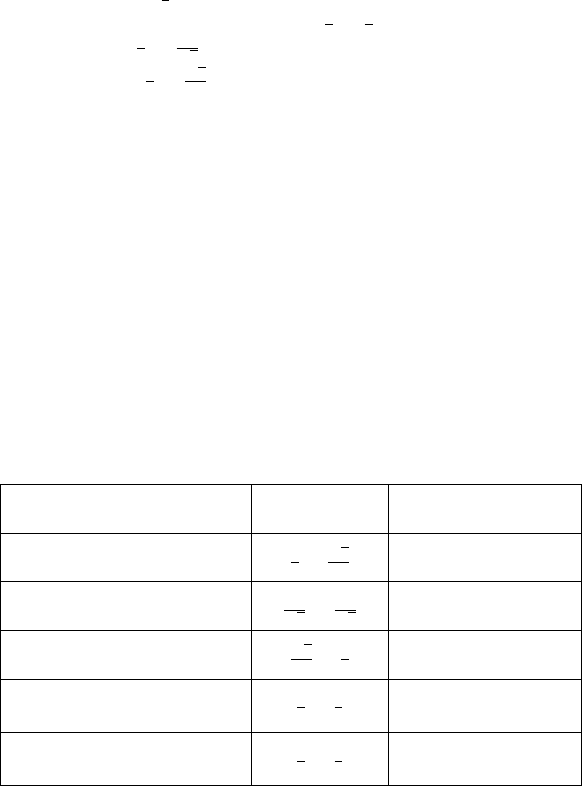
4. We can observe from the table that sin xincreases with the size of an acute
angle (sin 30◦<sin 45◦<sin 60◦), while cos xdecreases with the size of an
acute angle. You can compare the fractions or convert to decimal make sure.
We know that sin α=4
5. We also know that αis an acute angle.
Is it larger or smaller than 30◦?Larger, 4
5>1
2so sin α > sin 30◦.
Than 45◦?Larger, 4
5>1
√2so sin α > sin 45◦.
Than 60◦?Smaller, 4
5<√3
2so sin α < sin 60◦.
Page 33 (First)
1. As the angle αget smaller, the ratio of the opposite side to the hypotenuse
approaches 0.
2. Recall from the theorem on page 28 that if α+β= 90◦, then sin α= cos β
and cos α= sin β. So, if sin 90◦= 1, then cos 0◦= 1.
3. sin20◦+ cos20◦= 02+ 12= 0 + 1 = 1
4. sin290◦+ cos290◦= 12+ 02= 1 + 0 = 1
5. Our friend is mistaken; the sine of an angle can never be greater than 1.
Page 33 (Second)
1.
sin 0◦+ cos 0◦0 + 1 1
sin 30◦+ cos 30◦1
2+√3
21.366 (approx.)
sin 45◦+ cos 45◦1
√2+1
√21.414 (approx.)
sin 60◦+ cos 60◦√3
2+1
21.366 (approx.)
sin 90◦+ cos 90◦1 + 0 1
sin α+ cos α, where α
is the smaller. . .
3
5+4
51.4
sin α+ cos α, where α
is the larger. . .
4
5+3
51.4
2. If sin α= 1, then cos α= 0 and sin α+ cos α= 1. If cos α= 1, then
sin α= 0 and sin α+ cos α= 1. Otherwise, sin α < 1 and cos α < 1, so
sin α+ cos α < 2.
11
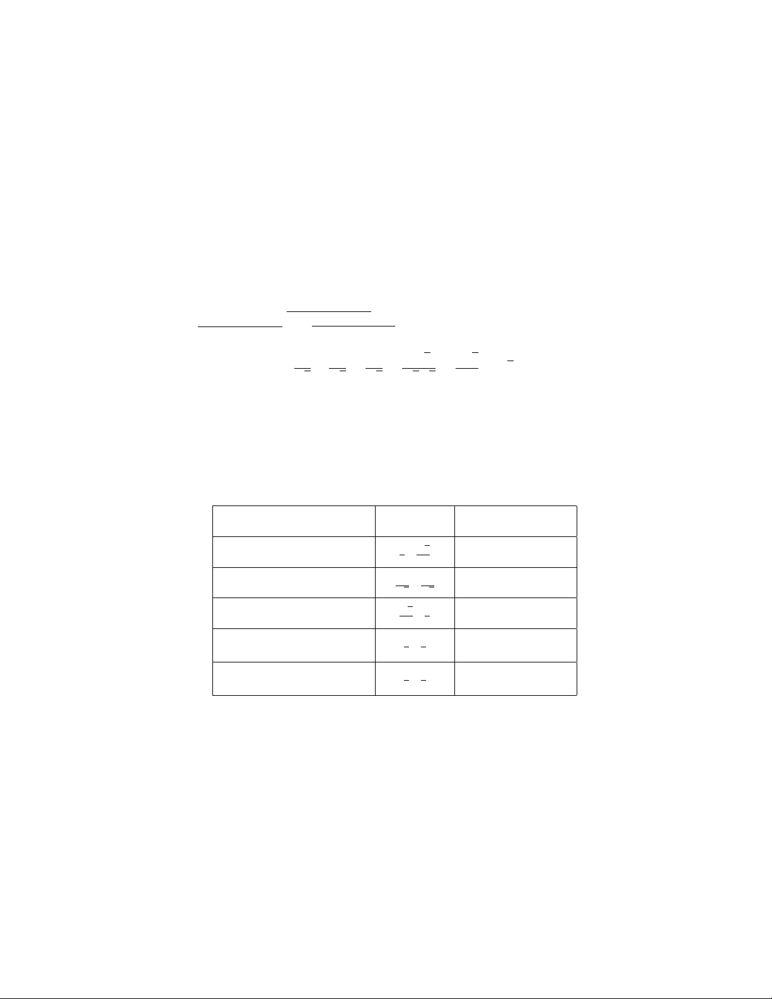
3. First we will expand and simplify (sin α+ cos α)2:
(sin α+ cos α)2= sin2α+ 2 sin αcos α+ cos2α
= (sin2α+ cos2α) + 2 sin αcos α
= 1 + 2 sin αcos α
We know that 0 ≤sin α≤1 and 0 ≤cos α≤1 because αis acute. So
2 sin αcos αis the product of three nonnegative numbers, and is itself a
nonnegative number. A nonnegative number added to 1 results in a number
≥1. Therefore, 1+2 sin αcos α≥1. The square root of a number ≥1 is itself
≥1. Therefore, √1 + 2 sin αcos α≥1. Rewriting the expression on the left:
√1 + 2 sin αcos α=p(sin α+ cos α)2= sin α+ cos α. So, sin α+ cos α≥1.
4. sin 45◦+ cos 45◦=1
√2+1
√2=2
√2=2√2
√2√2=2√2
2=√2
5. You should notice that the values for sin α+cos αincreases with larger alpha
when 0◦≤α < 45◦, reaches a maximum value when α= 45◦, then decreases
with larger αwhen 45◦< α ≤90◦.
Page 35
1.
(sin 0◦)(cos 0◦) 0 ·1 0
(sin 30◦)(cos 30◦)1
2·√3
20.433 (approx.)
(sin 45◦)(cos 45◦)1
√2·1
√20.5
(sin 60◦)(cos 60◦)√3
2·1
20.433 (approx.)
(sin α)(cos α), where α
is the smaller. . .
3
5·4
50.48
(sin α)(cos α), where α
is the larger. . .
4
5·3
50.48
How large can the product (sin α)(cos α)get? We can see from the table that
the maximum value of the product appears to be when α= 45◦.
Page 37
1. cos α= 3/5, cos β= 4/5, sin α= 4/5, sin β= 3/5, tan α= 4/3, tan β= 3/4,
cot α= 3/4, cot β= 4/3.
2. We can show that this assumption is correct using the corollary of the
Pythagorean Theorem: a2+b2= 32+ 42= 25 = c2.
12

3. cos α=a/c, cos β=b/c, sin α=b/c, sin β=a/c, tan α=b/a, tan β=a/b,
cot α=a/b, cot β=b/a.
4. c=√122+ 52=√169 = 13. cos α= 12/13. cos β= 5/13. cot α= 12/5.
cot β= 5/12.
5. First, we will use the Pythagorean Theorem to find the length of the longer
leg:
a2+b2=c2
a2+ 72= 252
a2+ 49 = 625
a2= 576
a= 24
We can now find the numerical values that were asked for: cos α= 24/25,
cos β= 7/25, cot α= 24/7, cot β= 7/24.
6. a
c= sin α= cos β
b
c= cos α= sin β
a
b= tan α= cot β
b
a= cot α= tan β
7. First, we will use the Pythagorean Theorem to find the length of the other
leg:
a2+b2=c2
a2+ 32= 52
a2+ 9 = 25
a2= 16
a= 4
We can now find the numerical values that were asked for: cos α= 4/5,
cot α= 4/3.
8. If tan α= 1, then a/b = 1, implying that a=band α= 45◦. cos α=
cos 45◦= 1/√2. cot α= 1/1 = 1.
9. tan 45◦= 1/1 = 1.
10. tan 30◦= 1/√3≈0.57735.
11. tan 45◦+ sin 30◦= 1 + 1
2=3
2. We don’t need a calculator because both
numbers are rational.
13
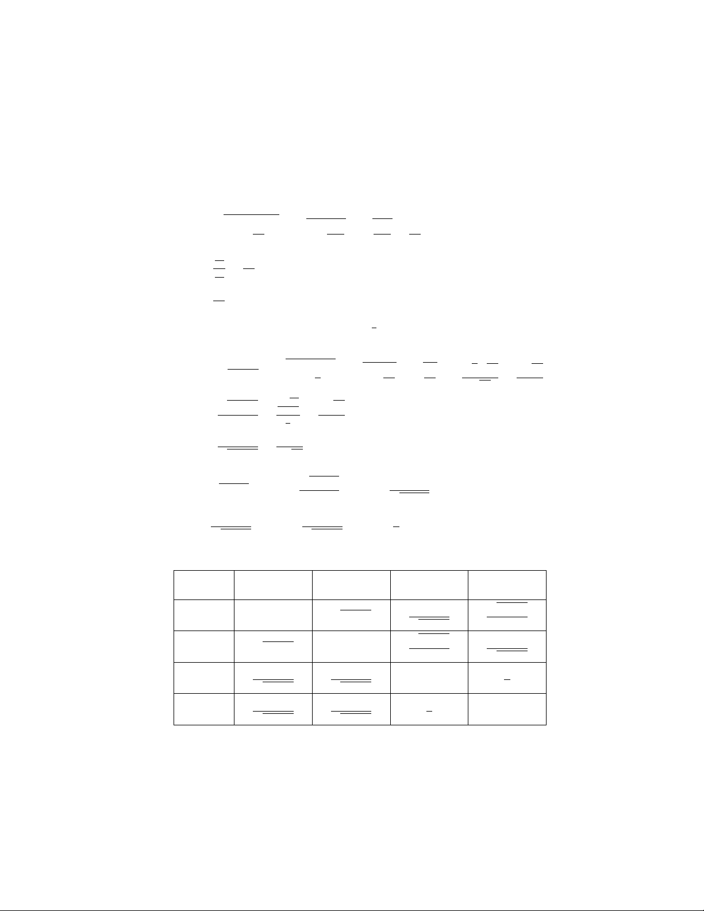
Chapter 2: Relations among Trigonometric Ra-
tios
Page 43
1. cos α=s1−8
172
=r1−64
289 =r225
289 =15
17
tan α=
8
17
15
17
=8
15
cot α=15
8
2. Let the length of the adjacent leg abe 3
7and the length of the hypotenuse
be 1 (see the first triangle diagram on page 44).
sin α=p1−a2=s1−3
72
=r1−9
49 =r40
49 =√4√10
√49 =2√10
7
tan α=√1−a2
a=
2√10
7
3
7
=2√10
3
cot α=a
√1−a2=3
2√10
3. sin α=√1−b2,tan α=√1−b2
b,cot α=b
√1−b2
4. sin α=d
√1 + d2,cos α=1
√1 + d2,cot α=1
d
5.
sin αcos αtan αcot α
sin α a √1−a2a
√1−a2
√1−a2
a
cos α√1−a2a√1−a2
a
a
√1−a2
tan αa
√1 + a2
1
√1 + a2a1
a
cot α1
√1 + a2
a
√1 + a2
1
aa
Page 45 (First)
1. Given in text
14
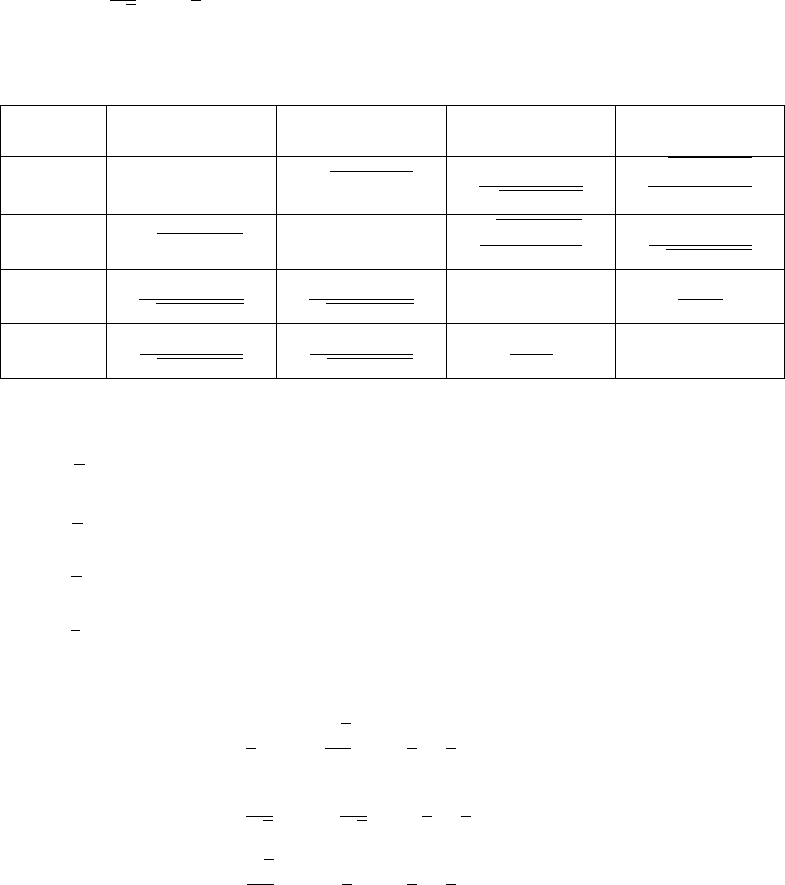
2. sin245◦=1
√22
=1
2
3.
sin αcos αtan αcot α
sin αsin αp1−sin2αa
p1−sin2αp1−sin2α
sin α
cos α√1−cos2αcos α√1−cos2α
cos α
cos α
√1−cos2α
tan αtan α
√1 + tan2α
1
√1 + tan2αtan α1
tan α
cot α1
√1 + cot2α
cot α
√1 + cot2α
1
cot αcot α
Page 45 (Second)
1. tan α=a
b= cot β
2. cot α=b
a= tan β
3. sec α=c
a= csc β
4. csc α=c
b= sec β
Page 47
1. (a) sin230◦+ cos230◦=1
22
+ √3
2!2
=1
4+3
4= 1
(b) sin245◦+ cos245◦=1
√22
+1
√22
=1
2+1
2= 1
(c) sin260◦+ cos260◦= √3
2!2
+1
22
=3
4+1
4= 1
15
2. sin2α+ cos2α= 1
√5
4!2
+ cos2α= 1
cos2α= 1 − √5
4!2
= 1 −5
16 =11
16
cos α=r11
16 =√11
4
3. sin2α+ cos2α= 1
sin2α+2
32
= 1
sin2α= 1 −4
9=5
9
sin α=r5
9=√5
3
4. sin α
cos α= tan α=1
√3
sin2α
cos2α=1
3
sin2α
1−sin2α=1
3
3 sin2α= 1 −sin2α
4 sin2α= 1
sin2α=1
4
sin α=r1
4=1
2
16
sin α
cos α= tan α=1
√3
sin2α
cos2α=1
3
1−cos2α
cos2α=1
3
3∗1−cos2α
cos2α= 3 ∗1
3
3∗(1 −cos2α)
cos2α= 1
3∗(1 −cos2α) = cos2α
3−3 cos2α= cos2α
3 = 4 cos2α
3
4= cos2α
√3
2= cos α
And then to check our solution we can calculate the fraction we are given
1
√3from our cos αand sin αfractions.
1
2
√3
2
2
2∗√3
1
√3
5. (a) cot xsin x=1
tan xsin x=sin x
tan x=sin x
sin x
cos x
=sin xcos x
sin x= cos x
(b) tan x
sin x=
sin x
cos x
sin x=
sin x
cos x·1
sin x
sin x·1
sin x
=
sin x
sin xcos x
1=sin x
sin xcos x=1
cos x
(c) cos2α−sin2α= cos2α−(1−cos2α) = cos2α−1+cos2α= 2 cos2α−1
(d) This one is tricky. You might need to try a few different approaches
(squaring above and below, multiplying above and below by cos αsin α).
Eventually it becomes clear that you need to multiply above and below
by (1 −cos α) and find a way to cancel out the sin αfactor in the
numerator:
sin α
1 + cos α=sin α(1 −cos α)
(1 + cos α)(1 −cos α)=sin α(1 −cos α)
1−cos α+ cos α−cos2α
=sin α(1 −cos α)
1−cos2α=sin α(1 −cos α)
1−(1 −sin2α)=sin α(1 −cos α)
1−1 + sin2α
=sin α(1 −cos α)
sin2α=1−cos α
sin α
17

(e) sin2α+ 2 cos2α−1
cot2α=1−cos2α+ 2 cos2α−1
cot2α=cos2α
cos α
sin α2
=cos2α
cos2α
sin2α
=cos2αsin2α
cos2α
= sin2α
(f) cos2α=cos2α
1=cos2α
cos2α+ sin2α
=
cos2α
cos2α
cos2α+sinα
cos2α
=1
cos2α
cos2α+sin2α
cos2α
=1
1 + tan2α
(g) sin2α=sin2α
1=cos2α
cos2α+ sin2α
=
sin2α
sin2α
cos2α+sinα
sin2α
=1
cos2α
sin2α+sin2α
sin2α
=1
cot2α+ 1
(h) 1−cos α
1 + cos α=(1 −cos α)(1 + cos α)
(1 + cos α)(1 + cos α)=1 + cos α−cos α−cos2α
(1 + cos α)2
=1−cos2α
(1 + cos α)2=sin2α
(1 + cos α)2
=sin α
1 + cos α2
(i) The key to solving this one is the formula for factoring a difference of
cubes: a3−b3= (a−b)(a2+ab +b2).
sin3α−cos3α
sin α−cos α=(sin α−cos α)(sin2α+ sin αcos α+ cos2α)
sin α−cos α
= sin2α+ sin αcos α+ cos2α
= 1 + sin αcos α
6. (a) We can rewrite the LHS to show that sin4α−cos4α= cos2α−sin2α:
sin4α−cos4α= (sin2α+ cos2α)(sin2α−cos2α) = 1(sin2α−cos2α)
= sin2α−cos2α
Answer: There are no angles αfor which sin4α−cos4α > cos2α−sin2α
because the expressions on either side of the inequality are equivalent.
(b) sin4α−cos4α >= cos2α−sin2αfor all angles αbecause the expressions
on either side of the inequality are equivalent.
18
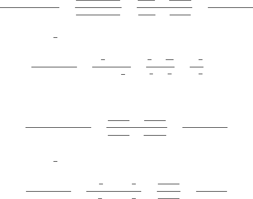
7. If we rewrite 2 sin αcos αas a fraction, we can divide above and below by
cos αto convert the numerator and denominator into expressions in terms
of tan α:
2 sin αcos α=2 sin αcos α
1=2 sin αcos α
sin2α+ cos2α
=
2 sin αcos α
cos2α
sin2α+cos2α
cos2α
=
2 sin α
cos α
sin2α
cos2α+cos2α
cos2α
=2 tan α
tan2α+ 1
Now we can plug in the given value for tan αto find the value of 2 sin αcos α
in this instance:
2 sin αcos α=2 tan α
tan2α+ 1 =2( 2
5)
(2
5)2+ 1 =
4
5
4
25 + 1 =
4
5
4
25 +25
25
=
20
25
29
25
=20
29
8. First, we will rewrite the expresssion cos2α−sin2αin terms of tan α:
cos2α−sin2α=cos2α−sin2α
1=cos2α−sin2α
cos2α+ sin2α=
cos2α−sin2α
cos2α
cos2α+sin2α
cos2α
=1−tan2α
1 + tan2α
(a) To find the numerical value of cos2α−sin2αwhen tan α=2
5we can
substitute 2
5for tan αin the formula above:
cos2α−sin2α=1−tan2α
1 + tan2α=1−2
52
1 + 2
52=1−4
25
1 + 4
25
=
21
25
29
25
=21
29
(b) Substituting rfor tan αin the formula above:
cos2α−sin2α=1−r2
1 + r2
9. First, we will rewrite the expresssion in terms of tan α:
sin α−2 cos α
cos α−3 sin α=
sin α−2 cos α
cos α
cos α−3 sin α
cos α
=
sin α
cos α−2 cos α
cos α
cos α
cos α−3 sin α
cos α
=tan α−2
1−3 tan α
Next, we substitute 2
5for tan α:
tan α−2
1−3 tan α=
2
5−2
1−32
5=
2
5−10
5
5
5−6
5
=−8
5
−1
5
= 8
19
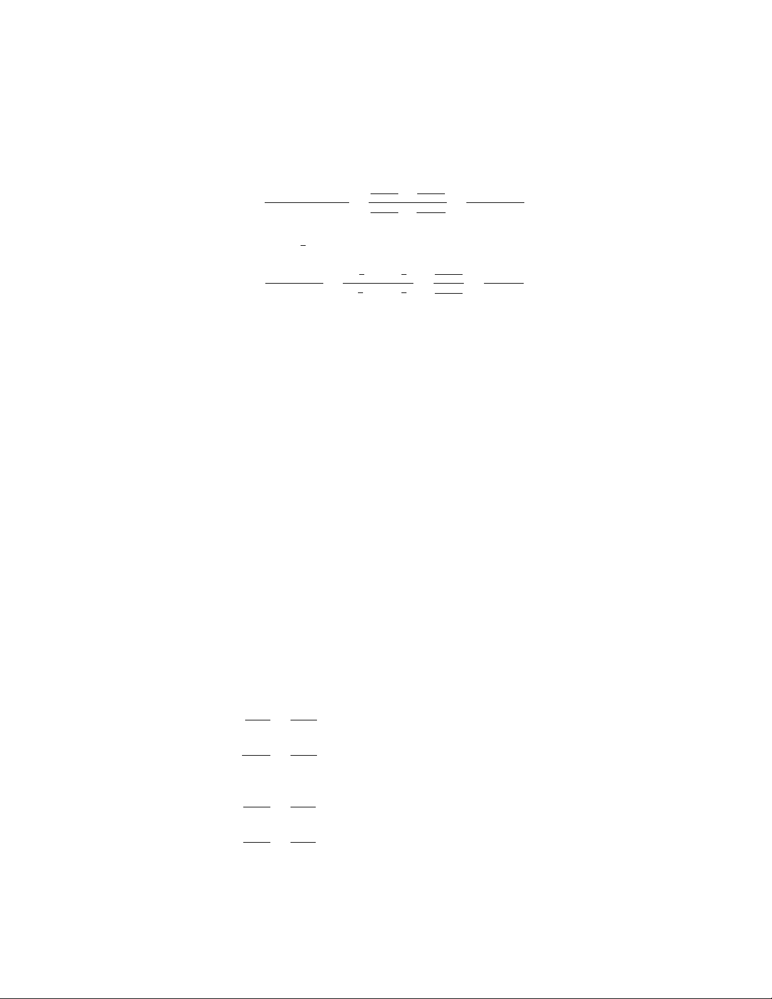
10. First, we will rewrite the expresssion in terms of tan α:
asin α+bcos α
ccos α+dsin α=
asin α
cos α+bcos α
cos α
ccos α
cos α+dcos α
cos α
=atan α+b
c+dtan α
Next, we substitute 2
5for tan αand simplify:
atan α+b
c+dtan α=a2
5+b5
5
c5
5+d2
5=
2a+5b
5
5c+2d
5
=2a+ 5b
5c+ 2d
Now we can see why the problem included the restriction that 5c+ 2d= 0;
the value of the expression is undefined if the denominator is zero. The sum
of two rational numbers is a rational number. Therefore the numerator and
denominator in the expression are both rational numbers. The quotient of
two rational numbers is a rational number. Therefore, the entire expression
evaluates to a rational number for arbitratrary rational values of a,b,cand
d.
11. We can expand and simplify the expression:
(sin α+ cos α)2+ (sin α−cos α)2
= sin2α+ 2 sin αcos α+ cos2α+ sin2α−2 sin αcos α+ cos2α
= 2 sin2α+ 2 cos2α
= 2(sin2α+ cos2α)
= 2(1)
= 2
As the expression evaluates to a constant, it is as large as possible for all
values of α.
Page 49
1. Rewriting any instances of sec αor csc αon either side of the identities:
(a) tan αcsc α= sec α
tan α1
sin α=1
cos α
tan α
sin α=1
cos α
(b) cot αcsc α= sec α
cot α1
cos α=1
sin α
cot α
cos α=1
sin α
20
(c) 1
sec αcsc α= cot α
1
1
cos α·1
sin α= cot α
cos α1
sin α= cot α
cos α
sin α= cot α
(d) tan2α= (sec α+ 1)(sec α−1)
tan2α= sec2α−1
tan2α=1
cos2α−1
(e) csc2α= 1 + cot2α
1
sin2α= 1 + cot2α
2. Rewriting any instances of sin αor cos αon either side of the identities, and
eliminating fractions:
(a) tan α
sin α=1
cos α
tan α1
sin α= sec α
tan αcsc α= sec α
(b) 1
sin αcos α= cot α
cos α
sin α= cot α
cot α= cot α
(c) tan2α+ 1 = 1
cos2α
tan2α+ 1 = sec2α
(d) 1
sin2α= 1 + cot2α
csc2α= 1 + cot2α
21
Page 50
1. First, we find the value of a2+b2:
a2+b2= (cos2α−sin2α)2+ (2 sin αcos α)2
= cos4α−2 cos2αsin2α+ sin4α+ 4 sin2αcos2α
= cos4α+ 2 cos2αsin2α+ sin4α
= (cos2α+ sin2α)2
= (1)2
= 1
According to the lemma on Page 50, as a2+b2= 1, an angle θexists such
that a= cos θand b= sin θ.
2. First, we find the value of a2+b2:
a2+b2= r1 + cos α
2!2
+ r1−cos α
2!2
=1 + cos α
2+1−cos α
2
=1 + cos α+ 1 −cos α
2
=2
2
= 1
3. First, we will rewrite aand bto eliminate the cube exponents:
a= 4 cos3α−3 cos α
= 4 cos αcos2α−3 cos α
= 4 cos α(1 −sin2α)−3 cos α
= 4 cos α−4 sin2αcos α−3 cos α
= cos α−4 sin2αcos α
b= 3 sin α−4 sin3α
= 3 sin α−4 sin αsin2α
= 3 sin α−4 sin α(1 −cos2α)
=−sin α+ 4 sin αcos2α
Next, we will expand a2and b2:
a2= (cos α−4 sin2αcos α)2
= cos2α−8 sin2αcos2α+ 16 sin4αcos2α
22
b2= (−sin α+ 4 sin αcos2α)2
= sin2α−8 sin2αcos2α+ 16 sin2αcos4α
Next, we add the expressions for a2and b2and simplify to 1:
a2+b2= cos2α−8 sin2αcos2α+ 16 sin4αcos2α+ sin2α−8 sin2αcos2α+
16 sin2αcos4α
= cos2α+ sin2α−16 sin2αcos2α+ 16 sin4αcos2α+ 16 sin2αcos4α
= cos2α+ sin2α+ 16 sin2αcos2α(−1 + sin2α+ cos2α)
= 1 + 16 sin2αcos2α(0)
= 1
According to the lemma on Page 50, as a2+b2= 1, an angle θexists such
that a= cos θand b= sin θ.
4. First, we find the value of a2+b2:
a2+b2=1−t2
1 + t22
+2t
1 + t22
=(1 −t2)2
(1 + t2)2+(2t)2
(1 + t2)2
=(1 −t2)2+ (2t)2
(1 + t2)2
=1−2t2+t4+ 4t2
(1 + t2)(1 + t2)
=(1 + t2)(1 + t2)
(1 + t2)(1 + t2)
= 1
According to the lemma on Page 50, as a2+b2= 1, an angle θexists such
that a= cos θand b= sin θ.
5. We expand (p2−q2)2+ (2pq)2and use the fact that p2+q2= 1 to simplify
to 1:
(p2−q2)2+ (2pq)2=p4−2p2q2+q4+ 4p2q2
=p4+ 2p2q2+q4
= (p2+q2)2
= (1)2
= 1
This is similar to Exercise 1 above.
23
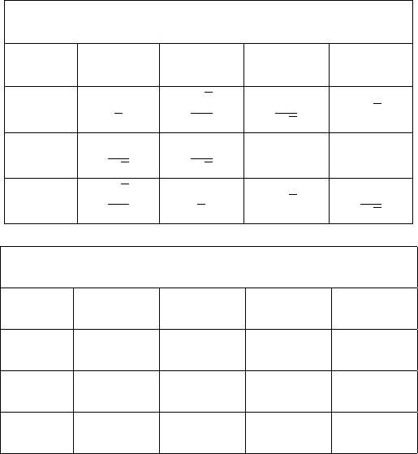
Page 51
1. sin α < 1 when αis acute, therefore 1−sin α > 0 when αis acute. 1−sin α=
0 when sin α= 1, i.e., α= 90◦.
2. cos α < 1 when αis acute, therefore 1−cos α > 0 when αis acute. 1−cos α=
0 when cos α= 1, i.e., α= 0◦.
3. Statement a) is always true. Statements b) and c) both include the case that
sin2α+ cos2α= 1, which is always true.
4. Let xbe the maximum cost of the items in a supermarket. In Supermarket
A, x≤$1. In Supermarket B, x < $1. In Supermarket C, x≤$1. In
Supermarket D, x > $1. We can see that Supermarkets A and C are offering
the same terms.
5. Inequality a) is correct. For b) to be correct, an angle αwould have to
exist such that sin α+ cos α= 2. We know that this is not the case. When
α= 90◦, sin α= 1 and cos α= 0. When α= 0◦, sin α= 0 and cos α= 1.
When 0◦< α < 90◦, sin α < 1 and cos α < 1. In all cases, sin α+ cos α < 2.
6. The largest possible value of sin αis 1, and occurs when α= 90◦. The largest
possible value of cos αis 1, and occurs when α= 0◦. See Page 32.
Page 52
1. sin 30◦= 0.5, sin 45◦= 0.707, sin 60◦= 0.866.
2. By using the tan button to calculate tan 60◦, and the sqrt button to calcu-
late √3, Betty can compare the results: both are 1.732.
3. Press tan, then enter the angle degree measure, then press 1/x
4.
in radical or rational form
αsin αcos αtan αcot α
30◦1
2
√3
2
1
√3√3
45◦1
√2
1
√21 1
60◦√3
2
1
2√31
√3
24
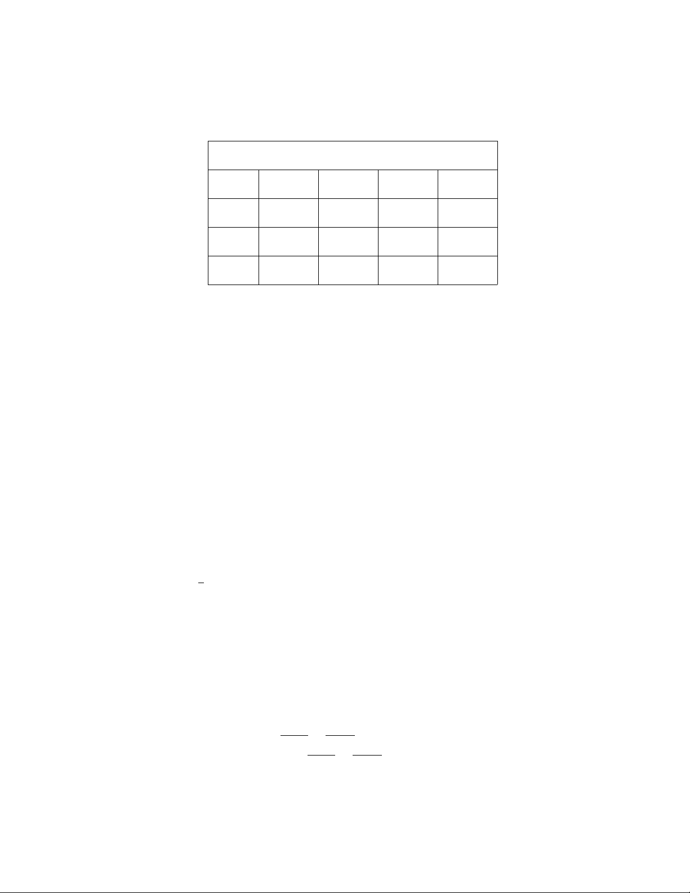
in decimal form, from calculator
αsin αcos αtan αcot α
30◦0.5 0.866 0.577 1.732
45◦0.707 0.707 1 1
60◦0.866 0.5 1.732 0.577
Page 53
1. The sine of the larger angle is 4/5 = .8. We can use the inverse sine function
to find the angle: arcsin .8 = 53.1301◦. The sum of the three angles in the
triangles is: arcsin .6 + arcsin .8 + 90◦= 36.8699◦+ 53.1301◦+ 90◦= 180◦.
2. (a) arcsin 1 = 90◦
(b) arccos 0.7071067811865 = 45◦
3. arccos 0.8 = 36.8699◦
4. arcsin 0.6 = 36.8699◦
5. Half of sin 30◦(0.25) seems like a reasonable estimate. The actual value is
0.2588.
6.
7.
8.
9.
10.
11.
12.
13.
14.
Page 55
1.
2.
3.
4.
25
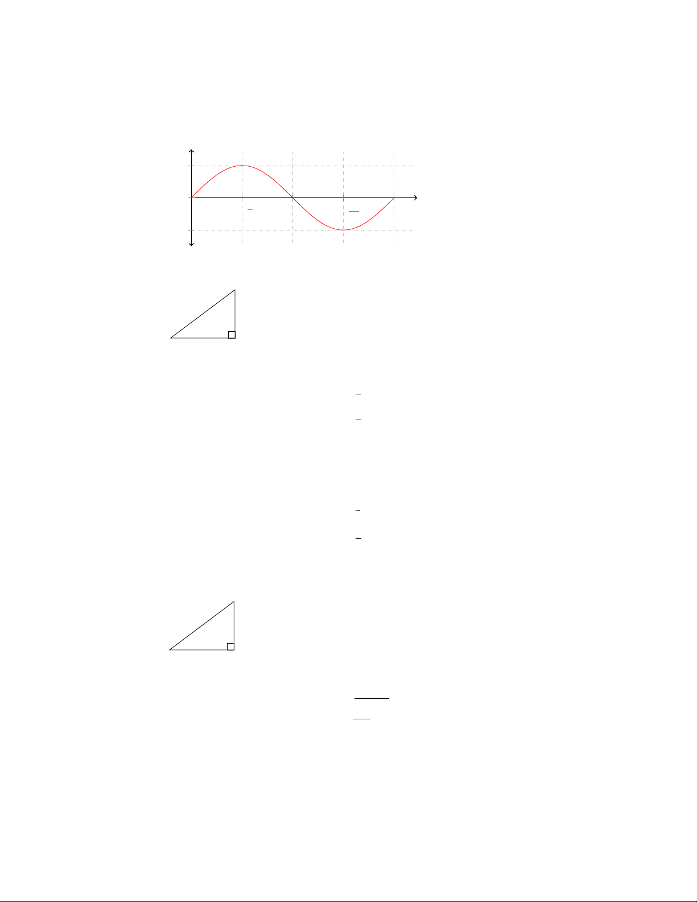
Page 56
1.
2.
3.
4.
Page 59
1.
2.
3.
4.
5.
6.
7.
8.
9.
10.
11.
Page 62
1. The degree measure of a semicircle is 180◦. The degree measure of a quarter
circle is 90◦.
2. The measure of arc cut off by one side of regular pentagon inscribed in a
circle is 360◦/5 = 72◦. For a regular hexagon: 360◦/6 = 60◦. For a regular
octagon: 360◦/8 = 45◦.
Page 64
1.
2.
3.
26
Page 65
1.
2.
3.
4.
5.
Chapter 3: Relationships in a Triangle
Page 68
1.
Page 70
1.
2.
3.
4.
Page 71
1.
Page 73
1.
2.
3.
4.
5.
6.
7.
8.
27
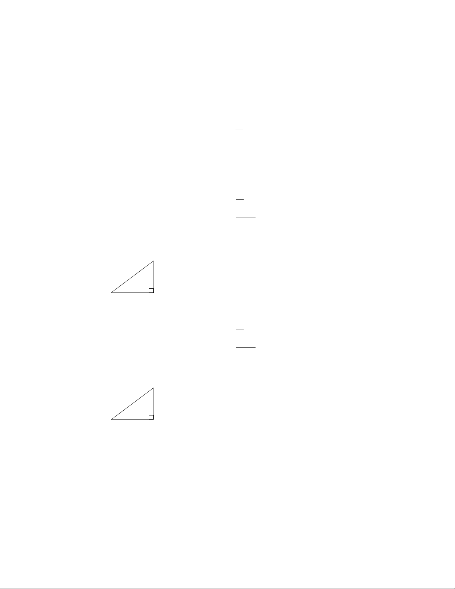
Page 75 (First)
1.
2.
Page 75 (Second)
1.
2.
3.
4.
5.
6.
7.
8.
9.
10.
11.
12.
13.
Page 79
1.
Page 80
1.
2.
3.
4.
5.
6.
7.
28
8.
9.
10.
11.
12.
13.
14.
Page 83
1.
2.
3.
Page 84
1.
2.
Page 85
1.
2.
Page 86
1.
Page 88
1.
2.
3.
4.
5.
29
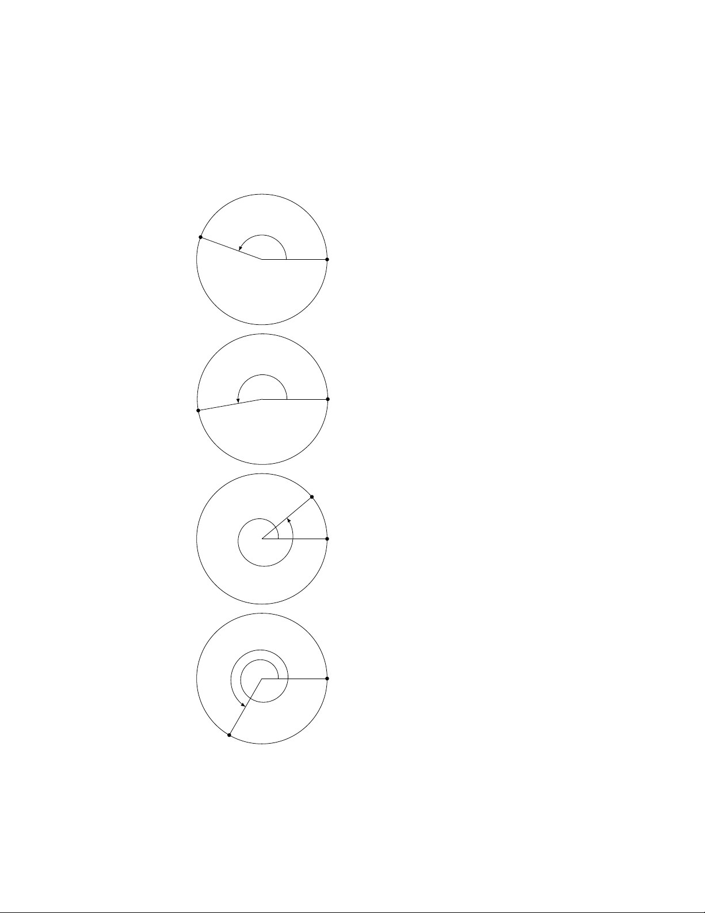
Chapter 4: Angles and Rotations
Page 93
1.
Page 98
1.
2.
Page 100
1.
2.
3.
4.
5.
Page 102
1.
2.
3.
Chapter 5: Radian Measure
Page 107
1.
2.
3.
4.
5.
6.
7.
8.
30
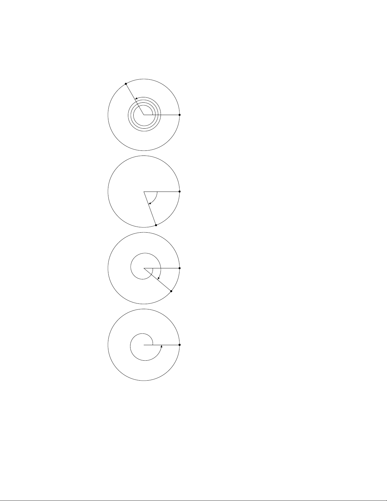
9.
10.
11.
12.
13.
14.
Page 111
1.
2.
3.
4.
5.
6.
7.
8.
9.
10.
11.
12.
13.
14.
15.
16.
17.
18.
19.
20.
31
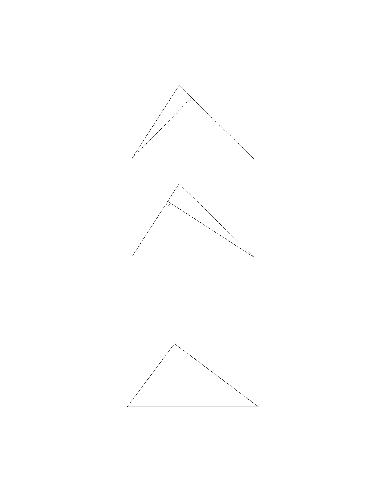
Page 114
1.
2.
3.
4.
5.
6.
7.
8.
Page 116
1.
Page 120
1.
2.
3.
4.
5.
6.
7.
8.
9.
Chapter 6: The Addition Formulas
Page 123
1.
2.
3.
4.
5.
32
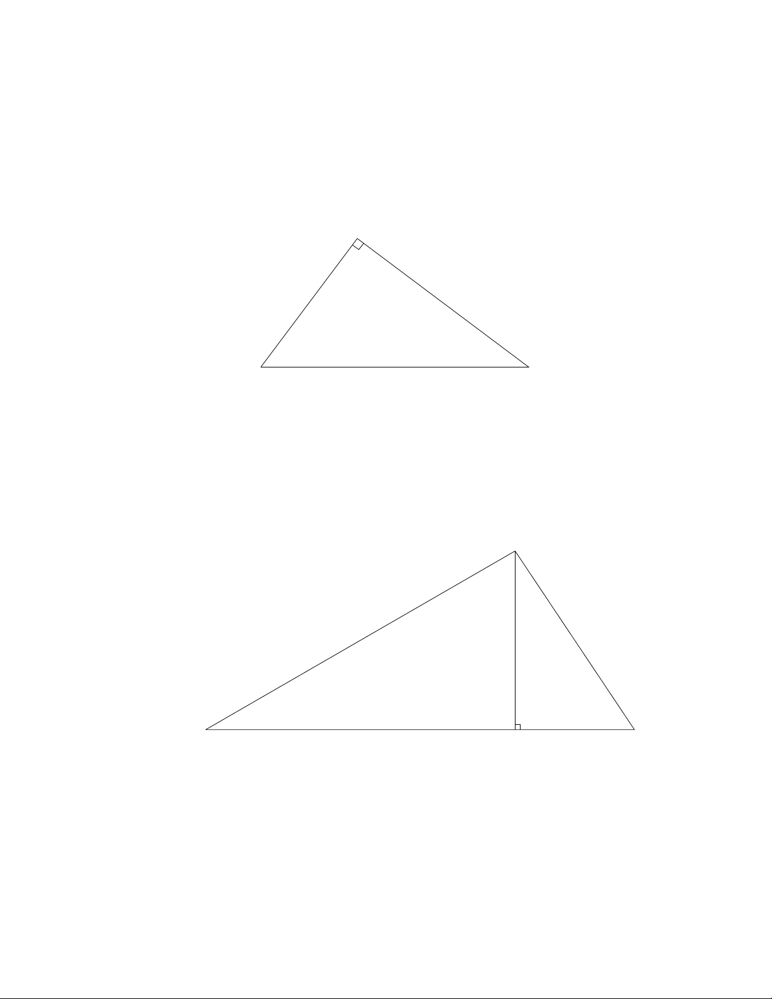
Page 125
1.
2.
3.
4.
5.
6.
Page 129
1.
2.
Page 131
1.
2.
3.
4.
5.
6.
7.
8.
9.
10.
11.
12.
13.
14.
15.
16.
17.
33
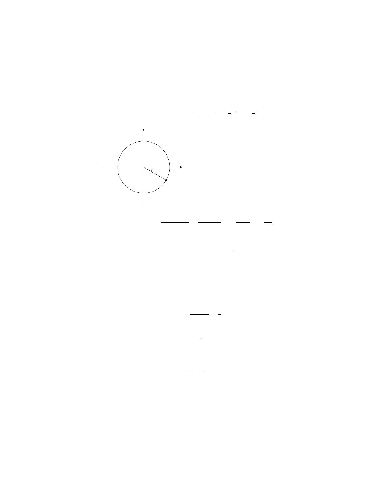
Chapter 7: Trigonometric Identities
Page 141
1.
2.
3.
4.
Page 142
1.
2.
3.
4.
5.
6.
7.
8.
9.
10.
11.
12.
Page 144
1.
2.
3.
4.
5.
6.
7.
8.
34
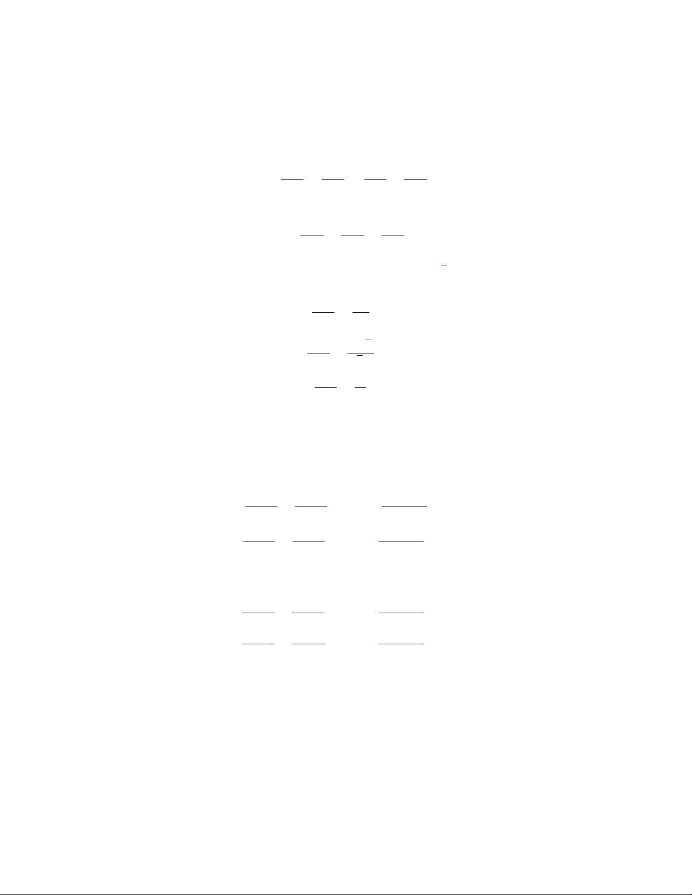
Page 147
1. (a) Since sin2α+ cos2α= 1, we know cos α=q1−(7
25 )2(and cannot be
the negative version because cos αis given as positive).
Thus sin 2α= 2 sin αcos α= 2 ·7
25 ·q1−(7
25 )2= 0.5376.
And cos 2α= 1 −2 sin2α= 1 −(7
25 )2= 0.9216.
(b) This part is similar except that we use the negative version of cosine,
namely cos α=−q1−(7
25 )2.
Thus sin 2α= 2 sin αcos α=−0.5376.
However, cosine value remains the same: cos 2α= 1 −2 sin2α= 1 −
(7
25 )2= 0.9216.
2. Firstly, sin 2α= 2 sin αcos α. In other words, the sine value will be a product
of rational numbers, so it will also be rational. Similarly, cos 2α= 2 cos2α−1
will be rational because cos αis rational. Exercise 1 confirms this result.
(The decimal solutions for Exercise 1 are not rounded.)
3. Let’s use the double angle formula cos 2α= 2 cos2α−1.
cos2α= cos 2α= 2 cos2α−1
−cos α2=−1 (Subtracted 2 cos2αfrom each side)
cos α2= 1
cos α=±1
These values of cos αcan happen only at α= 0, π.
4. We start with the given equation:
sin α+ cos α= 0.2
sin2α+ 2 cos αsin α+ cos2α= 0.04 (Squared both sides.)
1 + 2 cos αsin α= 0.04
2 cos αsin α=−0.96
Note that that is simply sin 2α. Hooray!
5. We can follow a very similar strategy here to find 1 −2 cos αsin α= 0.09.
Then sin 2α= 2 cos αsin α= 0.91.
6.
7.
8.
9. Yes, the book asked you to prove something incorrect! For counterexample,
consider that cos 2αcan be negative but cos2αis never negative. However,
we can prove a relationship.
35
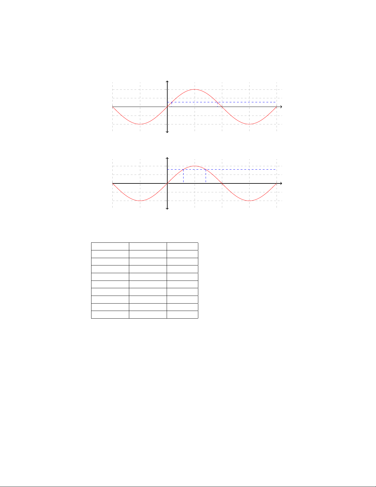
Recall that cos 2α= cos2α−sin2α. However, sin2α≥0 since it’s a square.
sin2α≥0
−sin2α≤0
cos2α−sin2α≤cos2α
cos 2α≤cos2α
10.
11.
12.
Page 148
1.
2.
3.
4.
5.
6.
7.
8.
9.
Page 150
1.
2.
3.
4.
5.
6.
7.
Page 152
1.
2.
36
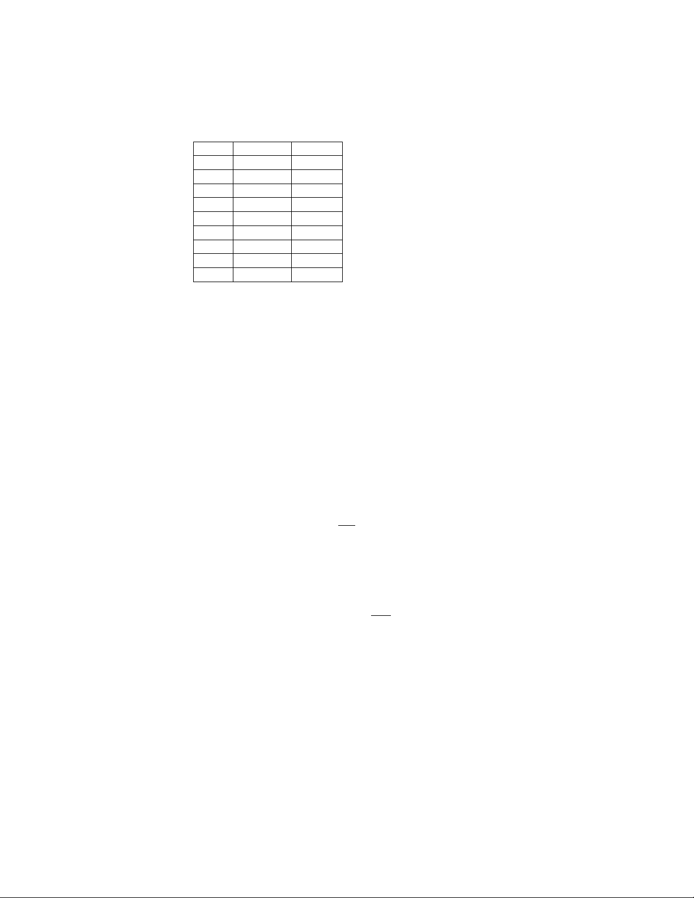
Page 153
1.
2.
3.
4.
5.
6.
7.
Page 155
1.
2.
3.
4.
5.
6.
7.
8.
9.
10.
11.
12.
Page 158
1.
2.
Page 160
1.
2.
3.
37
Page 161 (First)
1.
2.
Page 161 (Second)
1.
2.
3.
Page 162 (First)
1.
2.
3.
Page 162 (Second)
1.
2.
3.
4.
Page 163 (First)
1.
2.
Page 163 (Second)
1.
2.
3.
Page 164
1.
2.
38
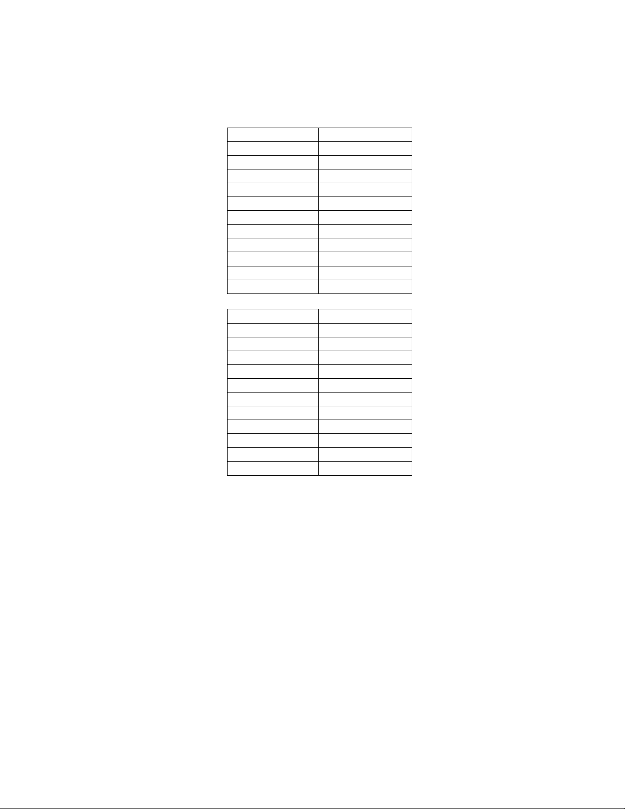
Page 166
1.
2.
3.
4.
Page 168
1.
2.
3.
4.
Page 170
1.
2.
3.
4.
5.
Chapter 8: Graphs of Trigonometric Functions
Page 177
1.
2.
3.
4.
5.
6.
7.
8.
39
9.
10.
11.
Page 179
1.
2.
3.
4.
5.
6.
7.
Page 181
1.
2.
3.
4.
5.
6.
7.
Page 183
1.
2.
3.
4.
5.
40
Page 183
1.
2.
3.
4.
5.
6.
7.
8.
9.
10.
11.
12.
13.
14.
15.
16.
17.
Page 188
1.
2.
Page 189
1.
2.
41
Page 191
1.
2.
3.
4.
5.
6.
7.
8.
Page 194
1.
2.
Page 196
1.
2.
3.
4.
5.
6.
7.
Page 197
1.
2.
3.
4.
42
Page 199
1.
2.
3.
4.
Page 200
1.
2.
3.
4.
Page 203
1.
2.
3.
4.
5.
Page 205
1.
2.
3.
Chapter 9: Inverse Functions and Trigonometric
Equations
Page 213
1.
2.
3.
43
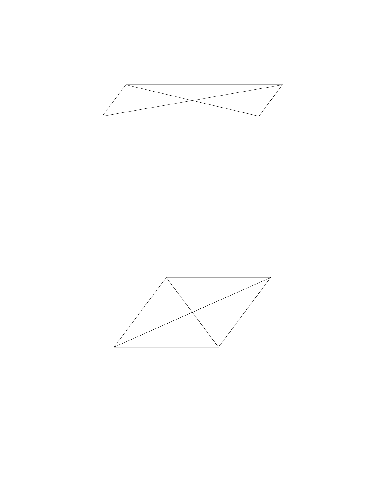
4.
5.
6.
7.
8.
9.
10.
11.
12.
13.
Page 220
1.
2.
3.
4.
5.
Page 221
1.
2.
3.
4.
5.
6.
7.
8.
9.
44
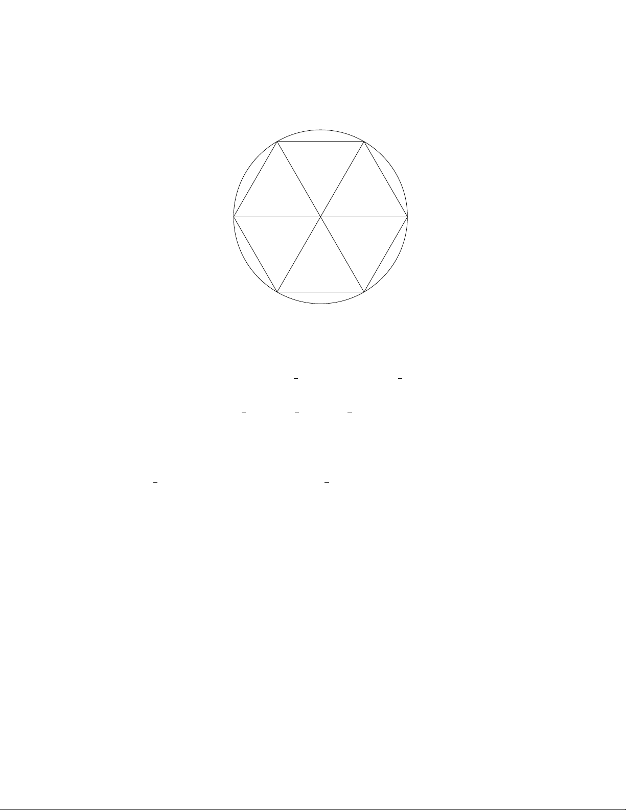
Page 225
1.
2.
3.
4.
5.
6.
7.
8.
9.
10.
11.
12.
13.
Page 227
1.
2.
3.
4.
Page 229
1.
2.
3.
4.
45